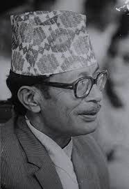
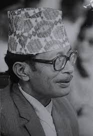
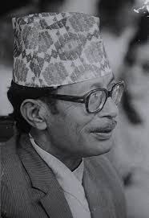
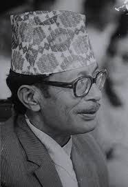

.jpg "Narayan Gopal Playing Harmonium")
.jpg "Narayan Gopal Painting") 



During the recording of a song for "Dakshina", Narayan Gopal was joking with the music director, who suggested ordering ice cream. Another musician declined, worried it would affect their voice, but Gopal eagerly agreed. After eating the ice cream, someone remarked, "Is he crazy? It will ruin his voice!" Despite this, Gopal recorded the song perfectly in one take. After listening to the playback, the director was amazed at how great the song sounded, showcasing Gopal's unmatched vocal talent, even after eating the ice cream.
– Tulsi Ghimire
©2024 Request. All rights reserved.